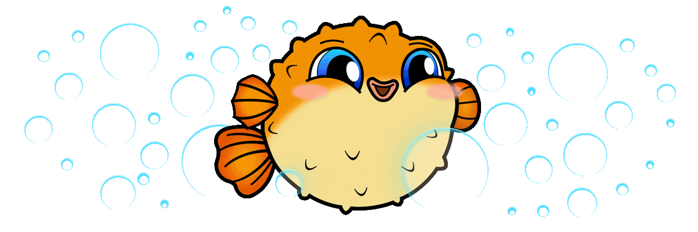
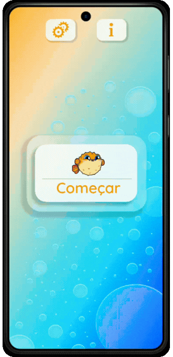
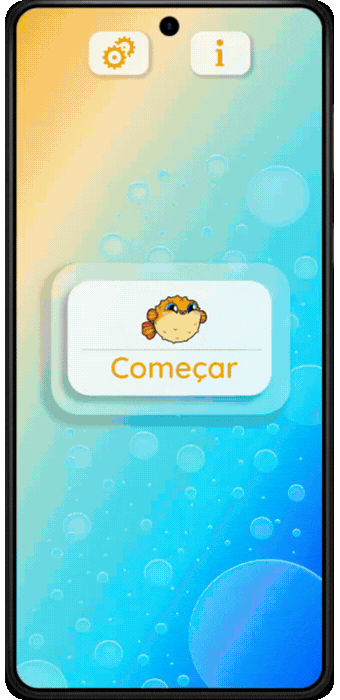
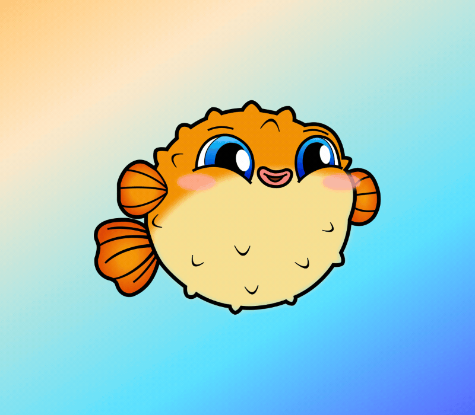
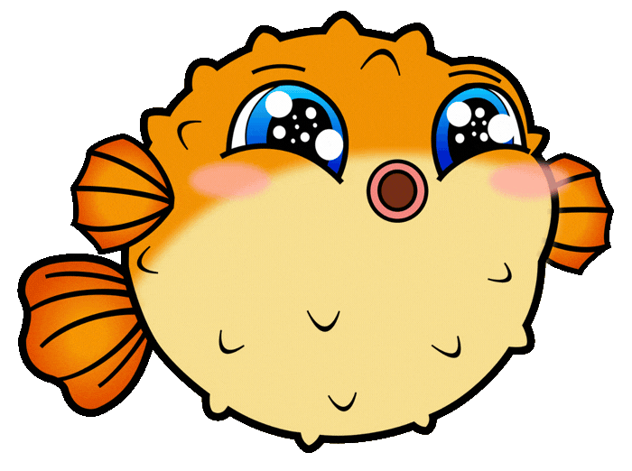

Conheça o Jogo
BaiaCool
Protótipo de interface de jogo desenvolvido no Figma
Interface conceitual de jogo criada no Figma
explorando hierarquia visual, usabilidade e
construção de identidade.
Contexto
Projeto acadêmico desenvolvido no
4º semestre com a proposta de criar a
interface de um software.
Escolhi desenvolver um jogo educativo
com foco em conscientização ambiental.


Conceito
O BaiaCool foi inspirado na dinâmica
de jogos educativos como o Duolingo, mas com
foco na preservação da vida marinha.
O jogador toma decisões que impactam cinco
parâmetros principais: poluição, biodiversidade
marinha, mudanças climáticas, pesca e orçamento.
Atuação
Desenvolvi integralmente o projeto
de forma individual, utilizando o
Figma do início ao fim, mesmo sendo
meu primeiro contato com a ferramenta.

Fui responsável por
- Estruturação da experiência e fluxo do jogo
- Design completo das interfaces
- Criação de um mascote original ilustrado no Figma
- Desenvolvimento de animações e transições entre telas
- Prototipação funcional e jogável
- Versões em modo claro e escuro
- Versões em português e inglês

Abordagem
Apliquei princípios de organização
visual, hierarquia de informação e
usabilidade para tornar a experiência
intuitiva, educativa e envolvente.


Resultado
Entrega de um protótipo interativo completo, que integrou
conceito, identidade visual, ilustração e experiência do usuário em uma solução coesa.